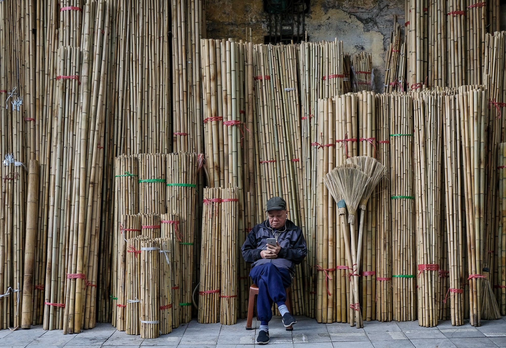

Mùa đông Hà Nội chưa bao giờ hết gây thương nhớ
Hà Nội đang bước vào những ngày rét ngọt ngào. Dù lạnh tê tái nhưng nếu không bước chân ra đường vào những ngày này, bạn sẽ thấy hối tiếc bởi rất nhiều thứ đáng yêu sẽ khiến bạn thấy lòng ấm áp hơn rất nhiều..
Từ đầu mùa đến giờ, dân tình không biết bao lần lo lắng sợ rằng năm nay chẳng có một mùa đông đúng nghĩa. Ngay cả khi đến giữa tháng 12, dù đã qua vài đợt trời chuyển gió, nhưng thời tiết chỉ mới lạnh ở độ mặc một chiếc áo khoác mỏng là đủ. Cho đến mấy hôm nay, khi nhiệt độ đã xuống tới tận 10 - 13 độ C, bao nhiêu áo phao, áo dạ đều lôi ra hết rồi phải quàng thêm chiếc khăn mới đủ ấm, thì ai cũng phải thốt lên rằng "đây mới chính là mùa đông của Hà Nội".
Hà Nội - Mùa đông, đó có lẽ là một trong những khoảng thời gian đặc biệt nhất trong năm với những đặc trưng không lẫn đi đâu được. Cái lạnh của mùa đông tháng 12 ngọt hanh hao, kèm theo những cơn gió mang không khí tê tái xộc vào người, cảm tưởng như bao nhiêu lớp áo cũng không đủ che chắn. Có người đã miêu tả một cách văn vẻ nhưng khá chính xác: không ồn ào náo nhiệt như mùa Hè, không nồng nàn say đắm như mùa Thu, không tươi trẻ đầy sức sống như mùa Xuân, mùa Đông Hà Nội mang chút lạnh lùng nghiêm nghị nhưng cũng không kém phần duyên dáng.
Những ngày thế này mà bước ra đường thì cũng ngại thật đấy, nhưng thích thú lạ! Ngại vì rét buốt len lỏi qua từng kẽ tay, ngấm vào da thịt, chỉ muốn phi xe thật nhanh trở về nhà, nằm cuộn tròn trong chiếc chăn to sụ. Nhưng nếu cứ sợ lạnh mãi thì sẽ chẳng bao giờ cảm nhận hết được thú vui của những ngày rét mướt, chẳng thể thấy được Hà Nội trong những ngày cuối năm vẫn rộn ràng nhưng nhịp sống lại âm trầm và đầy bình yên.

Dạo quanh các ngõ ngách lại thấy những góc đỏ ửng của những cuốn lịch vạn niên, thỉnh thoảng có cành đào vụt qua trước mắt khiến người ta lại giật mình xốn xang "mùa rét ngọt" đương gọi xuân về. Cứ thế, từ năm này qua năm khác, người ta nhớ nhung đông Hà Nội bởi những điều nhỏ bé, giản đơn như thế.
Rồi những khoảng nắng hiếm hoi của mùa đông bất ngờ xuất hiện mang đến cho Hà Nội một nét duyên dáng rất riêng mà không một nơi nào có được. Nắng đông không gay gắt mà chỉ là những tia ấm dịu dàng làm khung cảnh của Hà Nội trở nên đẹp diệu kỳ. Nắng biến ngày rét buốt ảm đạm như bừng lên đầy sức sống khiến người ta vội vàng lên phố. Thế nhưng thay vì hối hả vội vã lao đi giữa dòng người đông đúc, phố mùa đông chậm rãi mang đến cho mọi người những giây phút thảnh thơi.